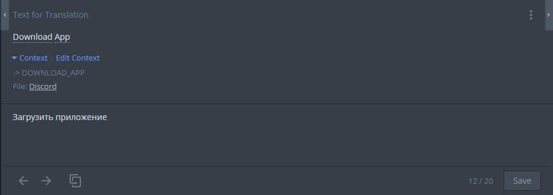
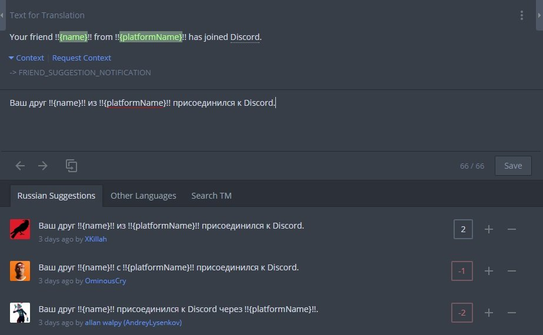

Перевод Discord #
Вы действительно в команде переводчиков и уже горите желанием сделать Discord удобным для многих русскоязычных пользователей? Круто!
В этом документе хотелось бы познакомить вас с инструментами переводчика и правилами самого перевода.

Редактор Crowdin #
Знакомство мы начнем с нашего незаменимого редактора Crowdin.

Весь перевод производится в специальном редакторе Crowdin. Он специально для переводчиков и имеет довольно большое количество незаменимых функций. Также он он сфокусирован на работе в команде.
Давайте же разберемся с его интерфейсом…
Строки. Слева находятся строки по выбранному фильтру. Фильтры могут быть настроены через меню
по кнопке с «воронкой». Изначально предлагается несколько фильтров, но вы можете почти полностью настроить свой
под разные нужды, такие как найти строки без подтверждения или без перевода. В редакторе для текстовых файлов
(txt или md) существует вариант отображения превью.
Рядом со строками вы можете заметить разные символы:
- Красный квадратик обозначает, что строка ещё не переведена;
- Желтый квадратик значит, что строка переведена, но не полностью;
- Зеленый указывает на существующие переводы, вы можете голосовать за них или предлагать свои;
- Желтая галочка показывает, что проверяющие (или proofreader-ы) не подтвердили перевод полностью;
- Зеленая галочка наоборот показывает, что перевод был полностью подтвержден, однако вы можете проверить его на предмет разных ошибок.
Справа от строчки в результатах также может быть значок:
- Простой значок речи означает комментарии к строке;
- Значок речи с восклицательным знаком показывает о существующих проблемах со строкой - это могут быть проблемы как вашего, так и других языков.
Панель перевода. По центру находятся оригинальная строка, ваш или популярный перевод, все переводы. В этой панели вы можете как предложить свой вариант перевода, так и проголосовать за существующие.
Комментарии и термины. Справа находятся комментарии переводчиков и во второй вкладке - поиск по терминам.
Во вкладке комментариев показываются комментарии всех переводчиков разных языков, поэтому рядом с каждым комментарием отображается флаг на каком языке был оставлен перевод.
Во вкладке терминов обычно показываются термины найденные по текущей строке, однако вы можете найти или создать свой собственный. Учтите, что все новые термины должны обговариваться с другими участниками перевода.
Далее я расскажу о различных базовых правилах работы в команде.
Перевод #

После выбора нужной строки вы увидете большое поле по центру, по умолчанию в нём содержится либо ваш сохраненный перевод, либо перевод, который набрал больше всего голосов, либо ничего, в случае, когда переводов просто нет. Кнопки внизу позволяют переключаться между строками и скопировать оригинальную строчку в поле.
Перед отправкой перевода… #
Перед тем, как отправить ваш собственный перевод необходимо соблюдать базовые меры предосторожности и правила перевода:
- Узнайте, где находится та строка, которую вы переводите. Переводы «out-of-context» принимаются только тогда, когда контекст неизвестен никому. Если вы не нашли тот или иной контекст, спросите о нём на сервере переводчиков и только в случае, когда никто не может ничего подсказать, переводите как вы считаете нужным.
- Не переводите переменные. Переменные это обычно выделенные зеленым в оригинальной строке
предложения или слова. Временами они обрамляются другими символами типа
!!(пример:!!{username}!!). Переменные переводить нельзя! - Форматируйте plural-ы. Plural-ами называются специальные переменные, цель которых правильно изменить форму слова в зависимости от количества: например, «1 пользователь», но «5 пользователей». О plural-ах можно (и нужно) узнать в специальном документе по ссылке ниже.
- Соблюдайте правила и соглашения о переводе. Команда переводчиков создает некоторые правила в процессе перевода, чтобы он получался согласованным и строки не различались в стиле написания. Правила также найдёте в отдельном документе, ссылка на него ниже.
- Убедитесь, что ваш перевод не является дубликатом. Переводчики, которые часто отправляют дубликаты могут быть лишены доступа к проекту, либо потеряют все свои переводы.
- Используйте термины: некоторые слова подчеркнуты, при наведении на них можно увидеть термин вашего языка или глобальный. Как отмечено выше, вы также можете найти термины во вкладке справа редактора. Помните о подтверждённых терминах из правил.
- Не исправляйте чужие ошибки. Об этом чуть ниже.
Ссылки на документы:
Сообщения об ошибках #
Переводчики как и любые другие люди могут допускать ошибки. Для создания наилучшего опыта, мы просим не отправлять варианты с исправленными ошибками других переводчиков (за исключением случаев, описанных ниже).
Ошибки в чужих переводах #
Когда вариант переводчика почти полностью правильный, попросите его исправить ошибку путем упоминания в чате сервера Discord или в комментариях.
Если в течение недели ответа не поступит, можете отправлять исправленный вариант.
Ошибка в подтверждённом переводе #
Если вы нашли ошибку в давно подтверждённом переводе (которому больше двух недель), то оповещение автора уже не обязательно. Предложите правильный вариант и оповестите проверяющего в специальном канале на сервере переводчиков, либо в комментариях к строке на Crowdin. Вы также можете попросить проверяющего исправить ошибку в таком переводе (такая возможность у них имеется).
Оповещение проверяющего — самое эффективное действие.
Для недавно утверждённых переводов всё как и с обычными переводами.
Голосование и сообщения о нарушителях #

Без голосования невозможно было бы определить самый лучший вариант. Голосование за лучшую строку позволяет проверяющему вашего языка более легко утверждать переводы.
Если строка уже переведена, то вы очень сильно поможете, проголосовав за правильный вариант перевода. Пожалуйста, обратите внимание на правильность переводов в соответствии с правилами нашего языка и пунктами выше: если все правила соблюдены - голосуйте «за»!
Проголосовать за правильный перевод можно нажав на + рядом с ним. Однако, если вы находите какой-то перевод абсолютно неверным, то проголосуйте против него нажав на -.
Пожалуйста, не используйте голосование в свою пользу, работайте честно в своей команде. Любое ваше действие видно всем и злоупотребление голосование приведет к удалению всех голосов и исключению из команды.
Если кто-то отправил дубликат или спам, то пожалуйста, сообщите о таком переводе нажав на три точки и выбрав опцию «Report Abuse».
Большое количество ложных сообщений о нарушителях может привести к удалению из команды переводчиков. Если Вам не нравится перевод, пожалуйста, просто нажмите -.
Всё! #
На этом пожалуй всё с базовыми правилами и инструкциями. Приступайте к переводу и голосованию. Не забывайте, что мы работаем командой, при любых вопросах относительно перевода обязательно посовещайтесь с командой.
❤ Огромное спасибо за вашу помощь и труд!
P.S. Если вы искали тут ссылку на правила, но не нашли: она тут определенно есть, а вы невнимательно изучили текст. Попробуйте снова.